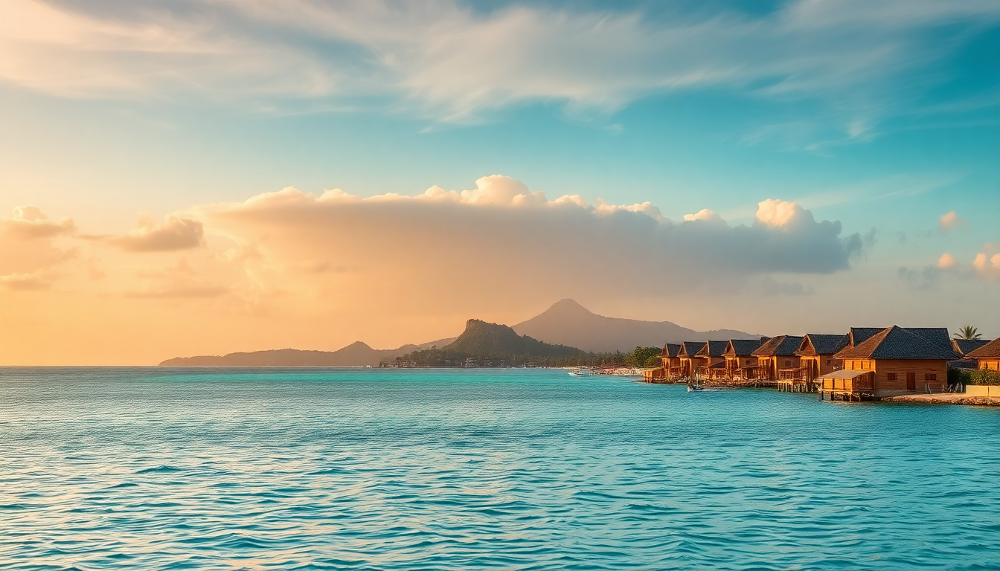

Best Time to Visit the Maldives for Diving & Snorkeling

I’ve been diving in the Maldives three times now—twice on liveaboards out of Malé and once island-hopping in Ari Atoll. The difference in what you see just by shifting your trip by a month is dramatic. Here’s the real breakdown of when to book for the best underwater action, without the marketing fluff.
What is the dry season vs. wet season for diving?
The Maldives has two distinct monsoon seasons, and they determine everything about your dive experience. The northeast monsoon (December to April) is the dry season—calm seas, blue skies, and visibility that often exceeds 30 meters. This is when the resorts in Malé Atoll and Ari Atoll are packed, and prices peak.
The southwest monsoon (May to November) brings stronger winds, rain, and rougher seas. But here’s the trade-off: plankton blooms attract manta rays and whale sharks. I did a trip in late June out of Baa Atoll and saw more mantas in a week than I saw in two weeks during March. The water is warmer too—29°C vs. 27°C in the dry season.
- Dry season (Dec–Apr): Best visibility, calm boat rides, guaranteed sunshine. Crowded and expensive.
- Wet season (May–Nov): Lower visibility (15–20m), choppy surface, but far more marine life. Fewer tourists, cheaper rooms.
- Shoulder months (Nov, May): Mixed weather, but you can snag a deal at places like Constance Moofushi or Lily Beach Resort without the peak-season premium.
When is the best time to see manta rays?
If manta rays are your priority, aim for May to November. I know it sounds counterintuitive because that’s the “rainy” season, but the southwest monsoon pushes plankton into the atolls. The cleaning stations in Baa Atoll’s Hanifaru Bay are world-famous for a reason. I floated there in August among 30+ mantas filter-feeding in a cyclone—it’s not hype, it’s real.
For the dry season, manta sightings are still possible but less predictable. You’ll find them at deeper cleaning stations in Ari Atoll, like Maaya Thila or Fish Head. But you’ll be competing with more divers.
- Hanifaru Bay (Baa Atoll): Peak manta action July–October. It’s a protected marine area, so snorkeling only—no scuba.
- South Ari Atoll: Reliable manta cleaning stations year-round, but best from January–April for consistent sightings.
- Malé Atoll: Good for mantas in the wet season, but the best spots are a longer speedboat ride from the capital.
When is the best time to see whale sharks?
Whale sharks are in the Maldives year-round, but your odds are highest in South Ari Atoll from January to April. That’s when the plankton aggregations are densest near the surface. I did a day trip from Malé to South Ari in February and saw four whale sharks in three hours—one was a juvenile barely 4 meters long.
During the wet season (May–November), whale sharks move deeper to follow plankton, so sightings are less frequent. You can still find them, but you’ll need a good local guide. I’ve had luck in Baa Atoll in September, but it’s more hit-and-miss.
- South Ari Atoll: The whale shark hotspot. Resorts like Kandima Maldives run dedicated snorkeling trips year-round.
- Malé Atoll: Occasional sightings near Kuda Rah Thila, but don’t base your trip here if whale sharks are your main goal.
- Liveaboard advantage: Boats like the Emperor Voyager often adjust their route to chase whale shark reports in real-time.
Which month has the best visibility for snorkeling?
For crystal-clear water, you want February and March. I snorkeled at Rasdhoo Madivaru in mid-March and could see the sandy bottom at 25 meters from the surface. No current, no surge—just calm, gin-clear water. This is when the coral looks its sharpest, and reef fish are vibrant.
Visibility drops during the wet season, but it’s not terrible. In July at Baa Atoll’s Dhigu Thila, I still had 15-meter visibility—good enough for reef sharks and turtles. The trade-off is that the water is warmer (29°C) and you don’t need a wetsuit.
- February–March: Peak visibility (25–35m). Perfect for macro photography and wide-angle reef shots.
- June–August: Lower visibility (10–20m) but warmer water. Great for manta and whale shark encounters.
- November: Transition month—visibility improves as the southwest monsoon fades. I’ve had 20m+ days at Lankanfinolhu in late November.
Is the Maldives good for diving during the rainy season?
Yes, absolutely—as long as you’re okay with some rain and slightly rougher crossings. I spent a week in Baa Atoll in August and had three days of heavy downpours. But the diving was excellent: mantas, whale sharks, and fewer boats at every site. The rain usually comes in short bursts, not all-day soakers.
The biggest downside is the wind. Channels between atolls can get choppy, and some outer reef sites might be closed. I missed Kuda Rah Thila in Malé Atoll because the current was too strong. Stick to protected inner reefs like Manta Reef in Ari Atoll, and you’ll be fine.
- Pros: Cheaper flights and hotels, fewer divers, peak manta season.
- Cons: Lower visibility, rougher boat rides, some sites inaccessible.
- Best resorts for wet season: Properties with house reefs, like Anantara Kihavah or Six Senses Laamu, mean you can snorkel right off the beach even if the ocean is rough.
What about currents and safety for beginners?
Currents in the Maldives can be strong, especially on the outer atoll reefs. The northeast monsoon (December–April) has lighter currents overall, making it better for beginner divers. I taught my girlfriend to dive in Malé Atoll in January, and we stayed on shallow sites like Banana Reef with gentle drifts.
During the southwest monsoon, currents pick up. Experienced divers love the adrenaline at sites like Fish Head in Ari Atoll, but beginners should stick to protected lagoons. Resorts like Kuredu Island Resort in Lhaviyani Atoll have calm house reefs perfect for new snorkelers.
- Beginner-friendly months: December–April. Calm seas, gentle currents.
- Advanced months: June–September. Stronger currents, drift diving, deeper sites.
- Best sites for beginners: Banana Reef (Malé), Maafushi Reef (Ari), Hanifaru Bay (snorkeling only).
FAQ
Is it worth visiting the Maldives in November for diving? Yes. November is a transition month between the wet and dry seasons. You get the tail end of the manta season in Baa Atoll, while visibility starts improving (20m+). Prices are still lower than peak season. I stayed at Cocoa Island in early November and had mixed weather but excellent diving at Kuda Huraa.
Do I need a wetsuit for snorkeling in the Maldives? In the dry season (December–April), water temps drop to 27°C—a 3mm shorty is comfortable. In the wet season (May–November), water is 29°C, and many snorkelers skip the wetsuit entirely. I use a rash guard year-round to avoid sunburn, especially at shallow sites like Lankanfinolhu.
What is the worst month for diving in the Maldives? June is the rainiest and windiest month in most atolls. Visibility can drop below 10 meters, and many outer reefs are inaccessible. If you’re set on a trip, stick to Baa Atoll for manta action or book a resort with a strong house reef like The Residence Maldives.
Conclusion
- Best overall months: February–March for visibility and calm seas. Book Ari Atoll for whale sharks, Malé Atoll for easy diving.
- Best for manta rays: July–October in Baa Atoll. Accept lower visibility for 30+ mantas at Hanifaru Bay.
- Best for whale sharks: January–April in South Ari Atoll. Dedicated day trips from Malé work well.
- Best for budget: May–November. Fewer crowds, cheaper rooms at places like Constance Halaveli, but pack a rain jacket.
- Best for beginners: December–April. Stick to protected sites like Banana Reef and Maafushi Reef.